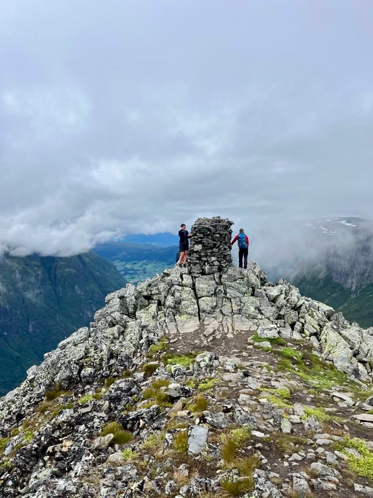
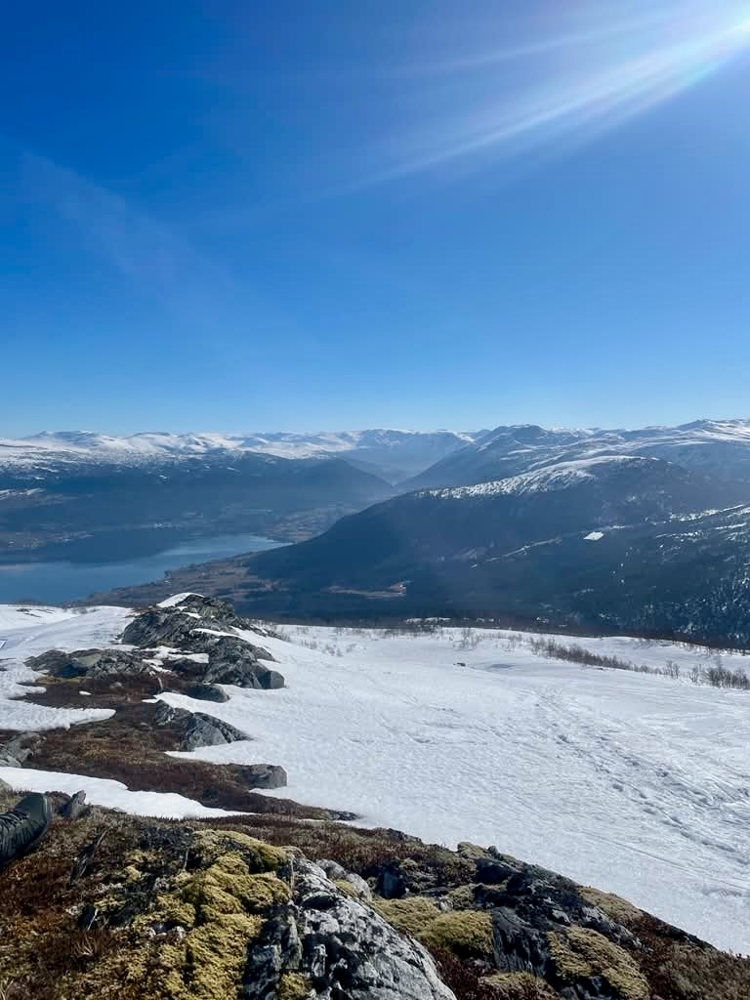
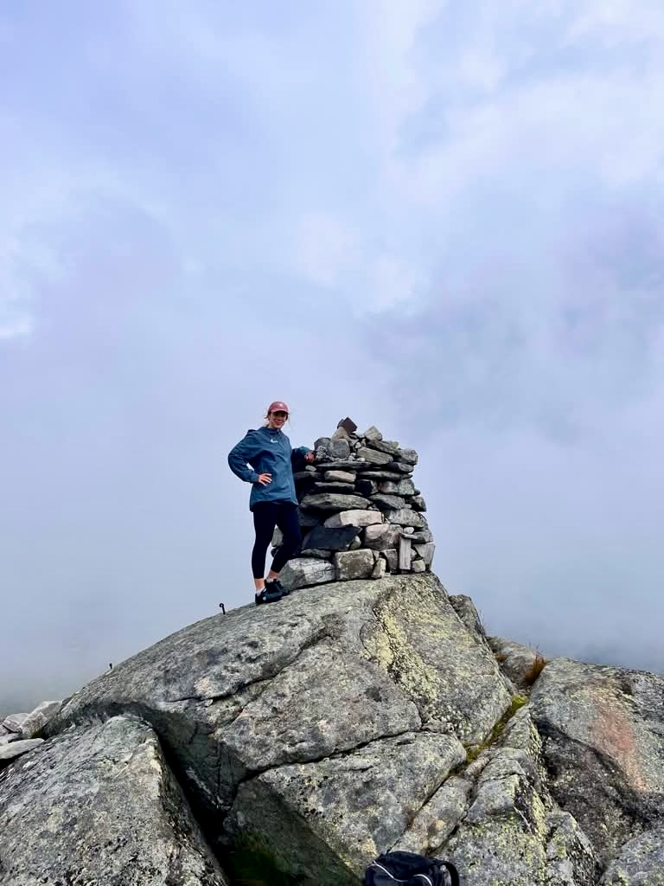

At 1,883 metres, Gaustatoppen is Norway's most spectacular viewpoint. On a clear day from the summit you can see one sixth of the entire country — a panorama that stretches from the coast to the high mountains in every direction. We drive you there from Oslo and back in a single day.
We pick you up at your hotel in the morning and head southwest into Telemark, one of Norway's most dramatic landscapes. The hike begins from Turisthytta at around 900m, climbing steadily through open moorland, past rocky outcrops and along an ever-widening ridgeline to the summit plateau. The views open up progressively as you climb — by the time you reach the top, the scale of the Norwegian landscape is simply astonishing.
The descent follows the same route, giving you time to absorb the scenery at your own pace. We stop for a coffee on the way home and are back in Oslo by early evening.

